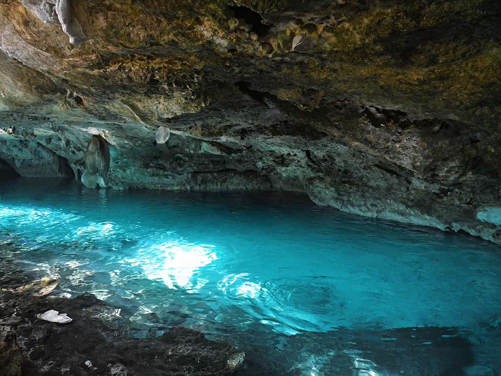
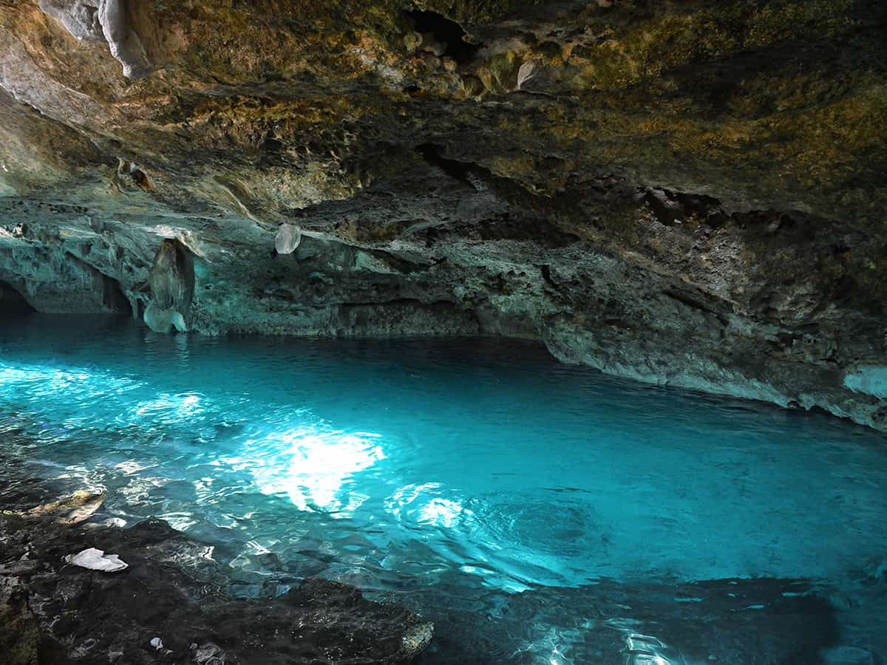

Zanzibar Archipelago
Zanzibar also known as Unguja is the most mesmerising and fascinating Island of Africa.
The best destinations on the Island are Stonetown, spice tour, safari blue tour, Nungwi, Kwendwa, east coast, (Jambiani, Paje Bwejuu and Kizimkazi). The best day trips are – Stone town tour, spice tour, safari blue tour, mnemba atoll, dolpion tour , prison island, jozani forest, sunset dhow cruise, sandbank picnic, and mangapwani slave chembers.
Book the tour


 
